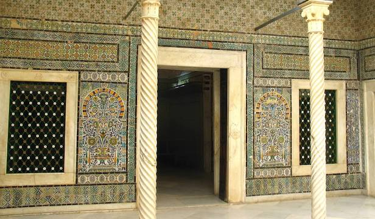
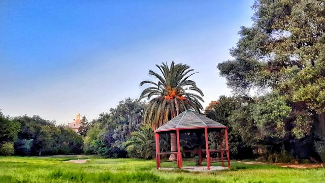
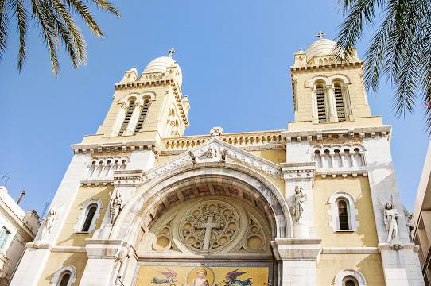
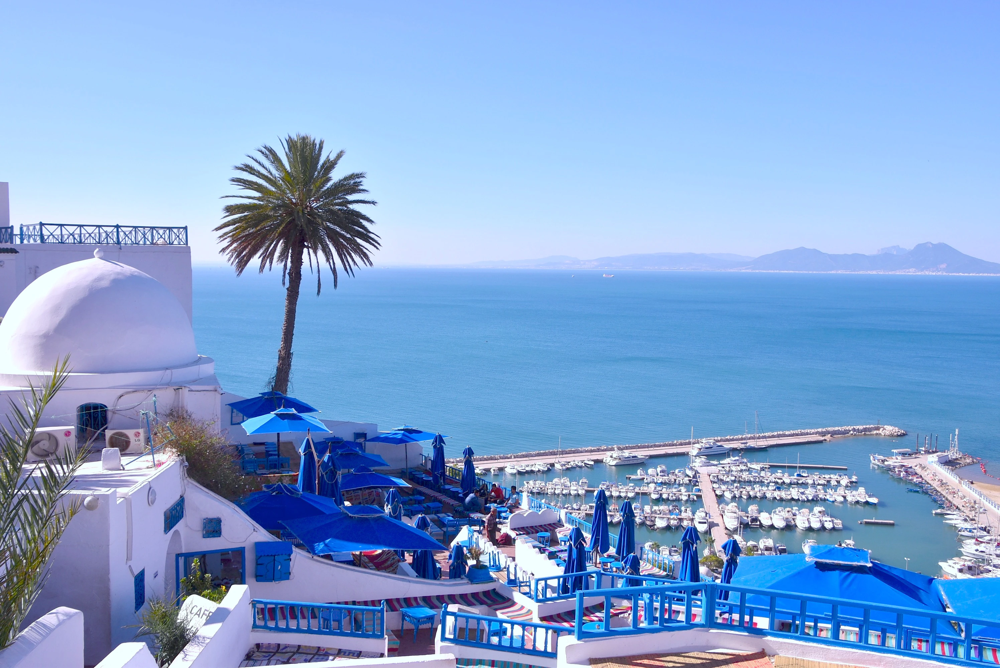
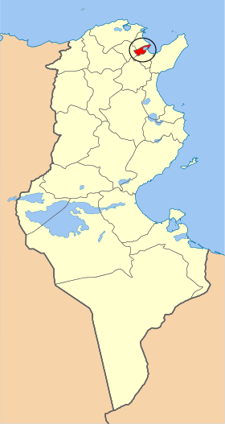
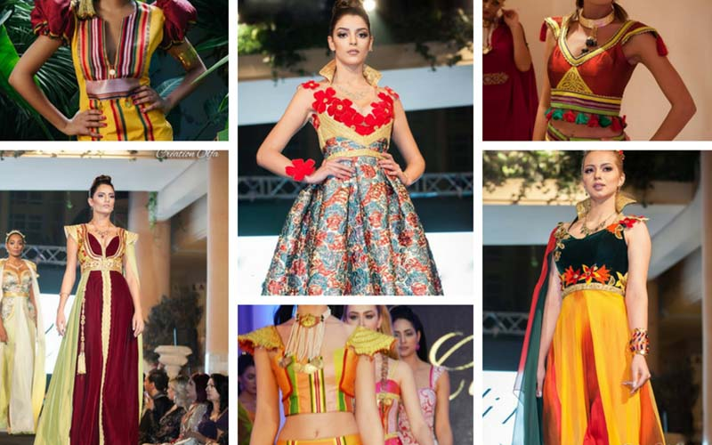
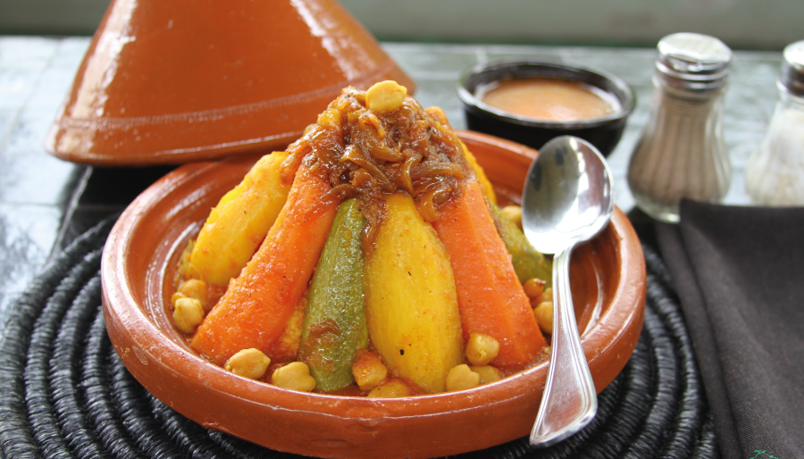
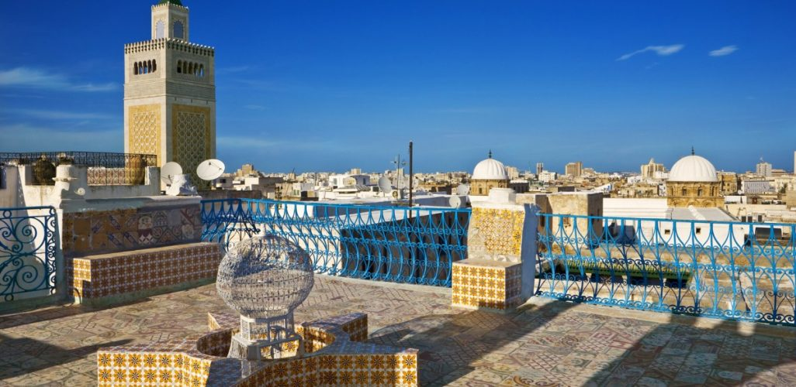
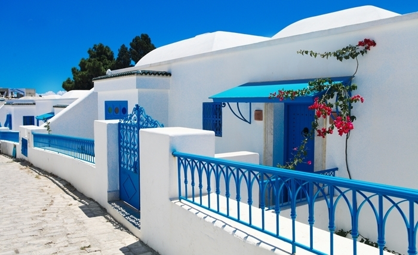

Tunis
Capitale de la Tunisie, Tunis est le plus important pôle industriel du pays. Situé au centre-est de la région du grand Tunis et ouvrant sur la méditerranée, le gouvernorat a un climat méditerranéen avec des précipitations annuelles atteignant 470mm.




Quelques chiffres
Superficie
346 km²
Nombre de maisons
217 000
Habitants
1 056 247
Localisation
La ville de Tunis est construite sur un ensemble de collines, culminant à quarante mètres d'altitude et descendant en pente douce vers le lac de Tunis mais présentant un versant abrupt dans la direction opposée (au-dessus de la sebkha Séjoumi). Ces collines, qui font suite aux coteaux de l'Ariana et correspondant aux lieux-dits Notre-Dame de Tunis, Ras Tabia, La Rabta, La Kasbah, Montfleury et La Manoubia, ont des altitudes qui dépassent à peine 50 mètres.

Histoire
La Tunisie a connu différentes périodes historiques. Peuplée dès la préhistoire, elle a été le berceau de la brillante civilisation carthaginoise. À partir du ie siècle av. J-C les Romains en firent un des grands producteurs de blé et d'huile d'olive destiné à approvisionner Rome. La Tunisie devenue le royaume des Vandales au moment des grandes migrations de peuples germaniques fut reconquise au début du vie siècle par les Byzantins de Justinien. Les Arabes s'emparent de la Tunisie dès le milieu du viie siècle, ils y introduisent l'islam. Kairouan devient le centre d'une brillante civilisation musulmane. La Tunisie va subir les divisions politiques et religieuses du monde arabo-musulman. Le plus souvent ses dirigeants tentent d'échapper à l'autorité des califes de Damas, de Bagdad ou du Caire. En 1574, la Tunisie devient une province de l'empire turc ottoman; mais le bey de Tunis parvient à une quasi indépendance. Au xixe siècle, différents beys modernisent le pays, mais endettent fortement la Tunisie. En 1882, la France impose son protectorat au gouvernement du bey de Tunis. L'économie est modernisée. Mais les nationalistes tunisiens réclament l'indépendance. Pendant la Seconde Guerre mondiale en 1943, la Tunisie est le lieu d'affrontement entre les armées anglo-américaines et l'armée allemande. Après la guerre, l'agitation nationaliste encadrée par le parti Néo-Destour d'Habib Bourguiba reprend. En 1956, la France se retire de Tunisie qui devient indépendante. Le président Bourguiba laïcise le pays en faisant d'importantes réformes de société, mais il impose le parti unique.

Culture

hover me
hover me
hover me
hover me